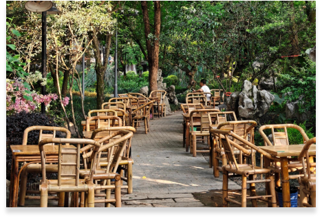
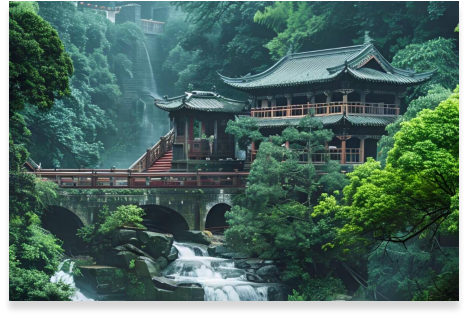

- 探索
- >
- 精选路线
- >
- 成都经典三日游路线攻略
Day 1
⏰ 下午行程（13:00-18:00）
📍 武侯祠（建议游玩2小时）
三国文化博物馆
红墙竹影拍照点
惠陵（刘备墓）
📍 锦里古街（建议游玩1.5小时）
18:00亮灯后最美
推荐小吃：三大炮、张飞牛肉
看川剧变脸表演（19:00场次）
Day 2
⏰ 下午行程（13:00-18:00）
📍 杜甫草堂（建议游玩2小时）
茅屋故居
红墙拍照
诗歌文化展
📍 太古里商圈（建议游玩2小时）
打卡IFS爬墙熊猫
方所书店
大慈寺茶馆
Day 3
⏰ 下午行程：青城前山问道（13:00-18:00）
🚗 交通：都江堰景区打车至青城前山（约30分钟，50元左右）
📍 青城山游览路线（13:30-17:00）：
山门（门票80元）
月城湖（可乘船5分钟到索道站）
缆车上山（单程35元，建议购买上行）
上清宫（道教重要宫观）
老君阁（青城山最高处，可俯瞰全景）
徒步下山（约1.5小时，途经天师洞）
⏰ 上午行程（8:00-12:00）
📍 宽窄巷子（建议游玩2小时）
宽巷子：看传统川西民居
窄巷子：逛文艺小店
井巷子：拍照打卡墙
📍 人民公园（建议游玩1.5小时）
鹤鸣茶社：体验盖碗茶（人均25元）
体验掏耳朵（30元/人）
参观辛亥保路纪念碑
⏰ 晚上行程（19:00-22:00）
🍲 蜀大侠火锅（人均80元）
必点：贵妃牛肉、太极双滑
📍 九眼桥夜景
安顺廊桥拍照
酒吧推荐："四合院"听民谣
⏰ 上午行程（7:30-12:00）
📍 大熊猫基地（建议游玩3小时）
7:30开园直奔月亮产房
9:00看饲养员喂食
小熊猫馆也别错过
🚗 交通：打车约40元/地铁3号线+接驳车
⏰ 上午行程：都江堰深度游（7:30-12:00）
犀浦站出发 📍 都江堰景区游览路线 离堆公园入口（门票80元） 伏龙观（观看宝瓶口最佳位置） 飞沙堰（了解泄洪排沙原理） 鱼嘴分水堤（四六分水的核心工程） 安澜索桥（体验摇晃的刺激感） 二王庙（供奉李冰父子的道教庙宇）
版权所有